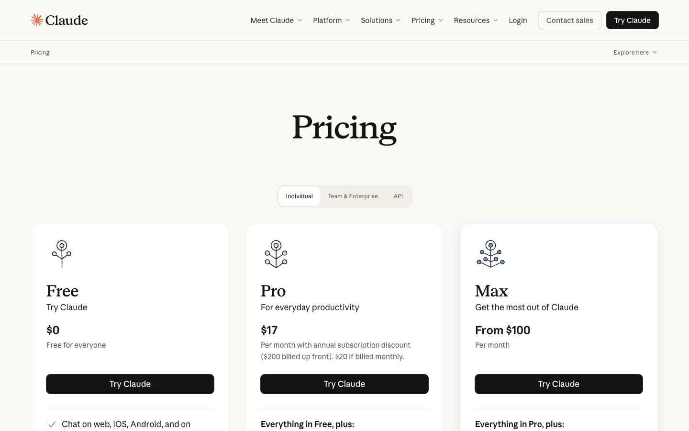
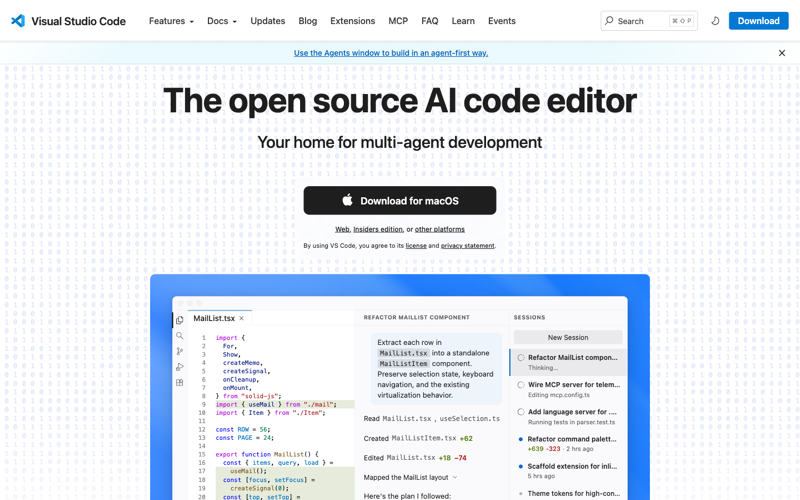
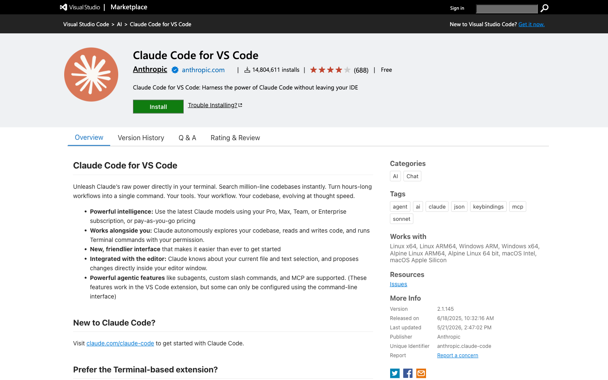

Claude Code: Steps 1-5
A no-fluff, 5-step setup guide. Zero to your first Claude Code session.
Claude Code is an AI coding partner that lives in your computer's terminal. It reads your files, writes code, runs commands — you describe what you want, it does it. By the end of this guide you'll have it installed, logged in, and running on your machine. No coding background required.
Pick your computer up top once we hit the install step and the whole guide will follow along.
Step 1 Subscribe to Claude
Claude Code rides on top of your Claude account. Easiest path:
- Go to claude.ai and sign up (free).
- Click your name (bottom-left) → Settings → Billing → Upgrade.
- Pick Claude Pro — $20/month. That's all you need to start.

Step 2 Install VS Code
VS Code is a free code editor from Microsoft. It's where you'll see your files and where Claude Code's nicer features show up (inline diffs, file previews, that kind of thing).
- Go to code.visualstudio.com.
- Click the big Download button — it auto-detects Mac or Windows.
- Open the downloaded file and install it like any other app.
- Launch VS Code. You can close any welcome tabs that pop up.

Now grab the Claude Code extension (optional but recommended):
- In VS Code, click the Extensions icon in the left sidebar (looks like four squares).
- Search
Claude Code. - Click Install on the one published by Anthropic.

Step 3 Install Claude Code
This is the actual Claude Code program. One command — copy, paste, hit Enter.
Pick your computer:
Open the Terminal app (search Spotlight with ⌘+Space and type "Terminal"). Then paste this and hit Enter:
curl -fsSL https://claude.ai/install.sh | bash
When it's done, close Terminal completely and reopen it. Then check it worked:
claude --version
If you see a version number print out, you're good.
Open PowerShell (click Start, type "PowerShell", hit Enter). Then paste this and hit Enter:
irm https://claude.ai/install.ps1 | iex
When it's done, close PowerShell completely and reopen it. Then check it worked:
claude --version
If you see a version number print out, you're good.
When the install finishes and you've reopened your terminal, here's what you should see when you run claude --version:
$ claude --version 2.0.41 (Claude Code) $
Step 4 Your First Run
Time to actually run it.
- Open VS Code.
- File → Open Folder… and pick (or create) a folder anywhere on your computer.
Documents/my-first-claude-projectis a great default — it doesn't need any code in it yet. - Open the built-in terminal: View → Terminal (or hit
Ctrl+`— that's the backtick key, top-left of the keyboard). - Type
claudeand hit Enter.
A browser window opens. Log in with your Claude account → click Allow. The browser will tell you it's done; you can close it.
Back in VS Code, Claude Code is now alive in the terminal panel. Try this:
Hi! Who are you and what can you help me with?
Hit Enter. Claude introduces itself. That's it — you're running Claude Code. Your terminal will look something like this:
✻ Welcome to Claude Code! /help for help, /status for your current setup > Hi! Who are you and what can you help me with? I'm Claude Code — an AI coding partner that runs in your terminal. I can read your files, write new ones, run commands, and help you build pretty much anything you can describe. What would you like to work on? >
Step 5 Let Claude Build Your CLAUDE.md
Last thing — and this is where it gets fun.
CLAUDE.md is a magic file. Drop one in your project folder and Claude reads it at the start of every conversation, so you don't have to keep explaining who you are and what you want.
The cool part: you don't have to write it. Just ask Claude Code to interview you and write it for you. Paste this prompt in:
Create a markdown file. I'm brand new to Claude Code. Help me create an About Me MD — ask me questions one at a time so you can learn about me, my goals, my work, and how I like writing.
Hit Enter. Claude will start asking you questions one at a time. Just answer them honestly. When it's done, it'll write the file and save it to your project folder.
Once Claude saves the file, restart your session (type /exit, then run claude again) so it picks up the new CLAUDE.md. From here on out, Claude knows you.
~/.claude/skills/<name>/SKILL.md and Claude can call on it anywhere. More on that in a later guide — for now, your About Me is plenty.
🚀 Off to the Races: 2 Power Tips
Tip 1 — Use Plan Mode for big asks
Before sending a chunky request ("rebuild my landing page", "set up my whole automation"), press Shift+Tab twice. You'll see "PLAN MODE" appear at the bottom of the terminal:
> Rebuild my landing page with a new hero section and a pricing grid. ⏸ Planning before I touch any files… 1. Read existing index.html and styles.css 2. Design the new hero (gradient + headline + CTA) 3. Add a 3-tier pricing grid below 4. Update mobile breakpoints 5. Show you a diff before writing Press y to approve, n to revise. >
Now Claude will plan the work first instead of just diving in. You read the plan, approve it, then it executes. It's the difference between "go fast and break things" and "go fast and don't break things."
Tip 2 — Use /init to auto-write CLAUDE.md
Got a folder with actual files in it? Type /init and hit Enter. Claude reads everything in the folder and writes a CLAUDE.md tailored to that project — way faster than writing one from scratch.
Try it on any existing project right now. Then tweak the file by hand.
You're set.
If you got this far — congrats, you're running Claude Code. Mess around. Break stuff. Ask it weird questions. The best way to learn what it can do is to use it on real work you're already doing.